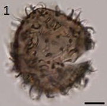

CYSTS LIST
ARCHAEPERIDINIUM/RSBC
Surface |
Shape |
Process |
Species |
Central body (um.) |
Process (um.) |
Image |
GranularLight brown w emptyDarker brown with greenish granules w living |
SubsphericalThin wall < 0.3 |
Slender, tapering, erect to recurvedNarrow circular baseMinute granules on processes |
Archaeperidinium bailongense | 38.3 to 50.3 (D) |
1 to 2.4 (D)6.4 to 10.3 (L) |
|
Light brown w emptyDarker brown with greenish granules w living |
Subspherical |
Slender, tapering, erect to recurvedWide circular baseSmooth |
Archaeperidinium constrictum | 28.1 to 47.6 (D) |
1 to 2.4 (D)3.8 to 6.4 (L) |
|
SmoothDarker brown w livingLight brown w empty |
Spherical to subspherical |
Hollow, capitateCircular base |
Archaeperidinium minutum | 24 to 33.1 (D) |
3.4 to 7.2 |
|
Pale brown with gray-brown content |
Subspherical |
Two typesLonger, hollow and minutely expanded, bifurcatedShorter solid, acuminate, scattered |
Archaeperidinium monospinum | 28 to 40 (D) |
3 to 7 (hollow)3 (solid spines) |
|
SmoothHazel brown w emptyDarker brown with orange granules w living |
Spherical to subspherical |
Always ends in minute distal expansion or branched at their endsCircular baseTapering, hollow and erected |
Archaeperidinium saanichi | 36 to 52 (D) |
2.8 to 7.8 |
|
Smooth |
Spherical |
Acuminate endHollow |
cyst of Oblea acanthocysta | 30 to 53 (D) |
1 to 8 |
 |
Smooth |
Spherical |
Acuminate endHollow |
Echinidinium delicatum | 17 to 25 |
2 to 4 |
|
Smooth |
Spherical |
Acuminate endSolid to apiculocavate |
Echinidinium sleipnerensis | 44 to 48 |
5 to 8 |
|
Smooth |
Spherical |
Acuminate endSolid/LongProcesses with irregularly rectangular bases |
Echinidinium transparantum | 22 to 36 |
5 to 14 |
|
Smooth |
Spherical |
Acuminate endSolid/LongProcesses with irregularly rectangular bases |
Echinidinium zonneveldiae | 32 to 50 |
5 to 10 |
|
Smooth |
Spherical |
Acuminate endSolid/Very short |
Islandinium brevispinosum | 18 to 25 |
0.3 to 3.5 |
|
Smooth |
Spherical |
Non-acuminate end/HollowOpen aculeate processes |
Echinidinium aculeatum | 16 to 26 |
6 to 8 |
|
Smooth |
Spherical |
Non-acuminate endApiculocavate to hollow |
Echinidinium karaense | 29 to 36 |
5 to 7 |
|
Granulate |
Spherical |
AcuminateSolid to apiculocavate |
Islandinium minutum | 29 to 45 |
3.5 to 7 |
|
Granulate |
Spherical |
Acuminate endHollowFine spinule on processes |
Echinidinium granulatum | 26 to 46 |
5 to 11 |
|
Granulate |
Spherical |
Striation at base of processesAcuminate endHollow |
cyst of Polykrikos hartmannii | 50 to 60 |
7 to 12 |
|
Granulate |
Spherical |
Non-acuminateSolid to apiculocavate |
Islandinium? cezare | 29 to 45 |
4 to 9 |